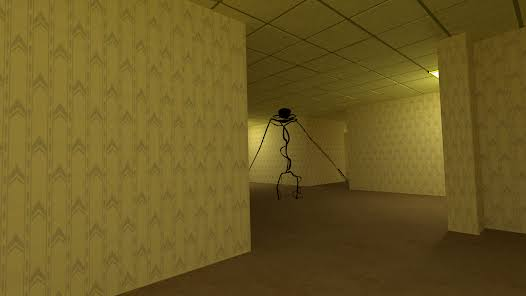
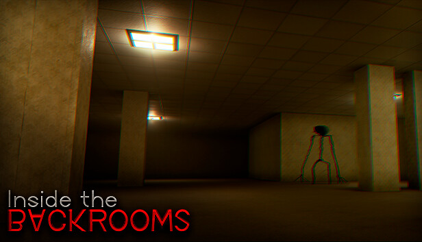
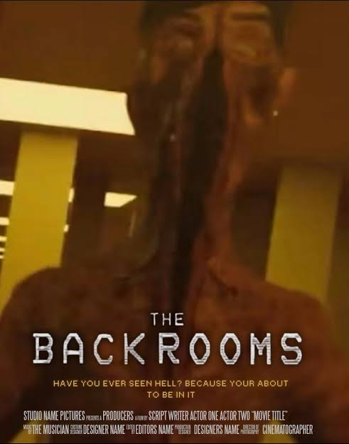

Backrooms is one of the most famous internet horror mysteries ever created. It became popular because of a strange image showing endless yellow rooms with old carpets and buzzing lights.
Many people believe that if someone accidentally glitches out of reality, they may enter a hidden dimension called the Backrooms.
What Are The Backrooms?
The Backrooms are described as endless hallways, office rooms and corridors that seem to stretch forever. There are no exits and almost no signs of life.

Popular Levels
Level 0: Endless yellow rooms.
Level 1: Dark storage and industrial areas.
Level 2: Dangerous maintenance tunnels.
Level Fun: Party-themed area hiding dark secrets.
The Creatures
Some Backrooms stories mention mysterious entities living inside certain levels. Nobody truly knows what these creatures are, making the mystery even scarier.

Why Is It So Popular?
Unlike normal horror games, Backrooms focuses on psychological fear. The feeling of being completely lost and alone creates a terrifying atmosphere.
This concept has inspired many games, YouTube videos and horror stories.

Final Thoughts
Backrooms has become one of the biggest internet horror phenomena ever. Its endless hallways and mysterious lore continue to fascinate millions of people.
If you ever find yourself walking through endless yellow corridors, you might have entered the Backrooms.